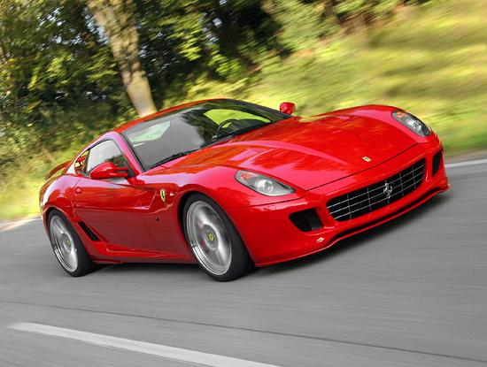
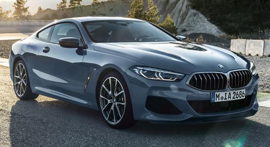
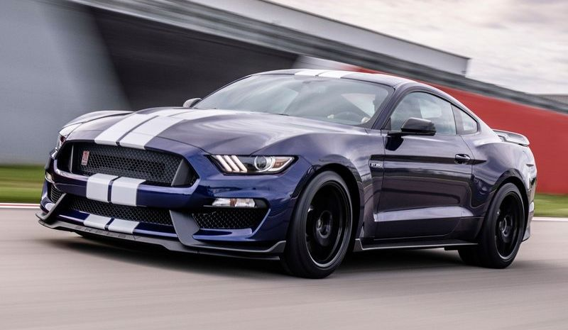

Ferrari 812 Superfast S
випуск цих авто почався з 2017р
| обєм см3 | 6496 |
| привід | задній |
| 0-100км.год | 2.9с |
| максимальна швидкість | 340км.год |
| розхід топлива | 17.5л |
огляд Ferrari
Ferrari 812 Superfast дебютировала на международном женевском автосалоне 2017 года. Это купе является самым мощным автомобилем в модельной линейке итальянского производителя, не считая гибридный суперкар LaFerrari, выпущенный ограниченным тиражом. Новинка пришла на смену F12 Berlinetta, на которую она внешне довольно похожа, хотя общих кузовных деталей у них нет. Ferrari 812 Superfast обладает завораживающим и притягательным дизайном. Хочется отметить длинный капот, скрывающий под собой мощную силовую установку и стильные вытянутые фары головного освещения, рядом с которыми расположились небольшие воздухозаборники, придающие новинке стремительный и агрессивный облик. В переднем бампере находится большой воздухозаборник, он прикрыт черной пластиковой сеткой и способен пропускать огромные потоки воздуха для охлаждения большого двигателя под капотом.
BMW M-850i
випуск з 2018р і досі
| обєм см3 | 3200 |
| привід | задній |
| 0-100км.год | 3.7 |
| максимальна швидкість | 280км.год |
| розхід топлива | 15.4л |
відео огляд BMW
Завдяки новому флагману, в модельному ряду BMW відбудуться зміни. Адже "вісімка" покликана на заміну купе 6-Series. Після відходу останнього в гамі "шісток" збережеться лише ліфтбек GT. Зовнішність BMW 8-Series взята у однойменного концепту, який дебютував в 2017 році в Італії. Втім, дизайн процитовано не дослівно. Головна оптика у серійної моделі стала більше. Злегка змінилася форма "ніздрів" решітки радіатора. Перегородка між ними помітно потоншала, що для баварців є новим дизайнерським рішенням.
Ford Mustang
випускаєтся з 2015р
| обєм см3 | 2300 |
| привід | задній |
| 0-100км.год | 5.8с |
| максимальна швидкість | 234км.год |
| розхід топлива | 14.3л |
відео огляд Ford
Модели Ford Mustang первых годов выпуска — настоящее произведение искусства. Новый Мустанг агрессивен снаружи, но дружелюбен в салоне. При этом, он красив, чертовски красив, и ему безумно идет желтый цвет. Чего стоят одни только традиционно трехсекционные задние фонари, как жабры сводящиеся к номерному знаку. Источник: https://auto.ria.com/news/test-drive/218517/vechno-molodoj-test-drajv-ford-mustang.html © AUTO.RIA.com™Я моментально стал его фанатом, осознав какую кармическую роль сыграло в его жизни имя. Mustang нужно понять и принять таким, как есть. Не стоит и пробовать что-либо изменить. И сами не подстраивайтесь, ведь укротить своенравного мустанга под силу только сильному духом, открытому сердцем и явственно понимающему свою цель человеку. Все, как в жизни, по-настоящему. Отсюда и невероятное чувство мгновенного привыкания к автомобилю.